Your website and your team's dashboard, explained in plain words and pictures: how a quote travels, who can do what, how your photographs and records are kept safe, and the reasons behind each choice.
|
Beco Interiors Platform summary · 13 October 2026 | ||||||||||||||||||||||||
|
Brightex Solutionswww.brightexsolutions.co.ke · +254 741 980 127 · info.brightexsolutions@gmail.com
| ||||||||||||||||||||||||
|
00 Inside this summary Contents 01What you have now
07Who can see what
02How it fits together
08Finding your way
03A quote's journey
09Why it is built this way
04Quoting at the counter
10Keeping it safe
05From approval to payment
11What Beco owns
06Your catalogue and photographs
12What is still open
Beco sells through quotations, so the whole platform is built around one moment: a salesperson raising, pricing and sending a branded quote from a phone faster than writing it on paper. 01 The big picture What you have now Two places, one set of records. Customers use the website. Your team uses the dashboard. Both read and write the same secure records, so a request made on the website is waiting in the dashboard a moment later. 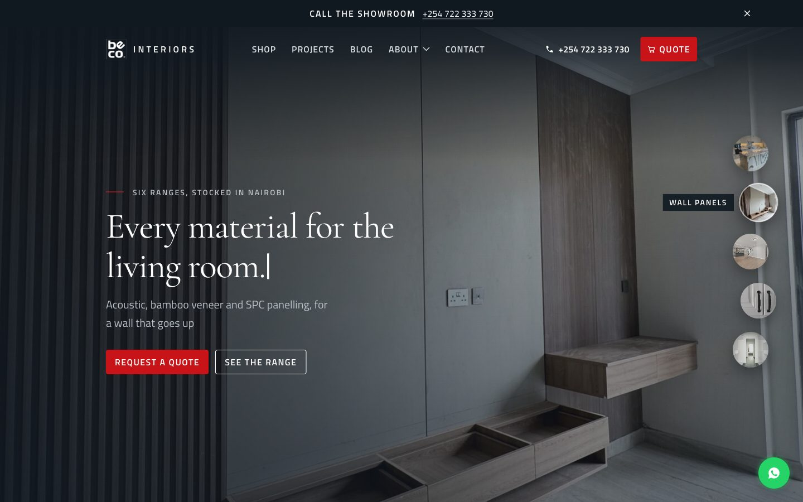 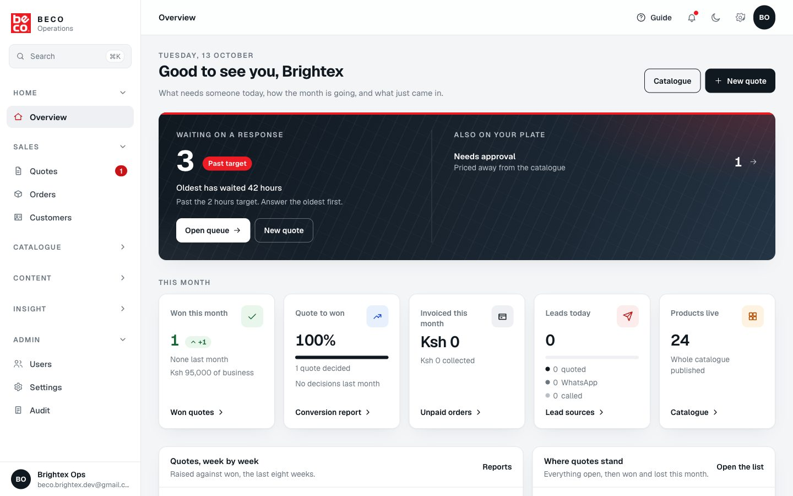 For customers Browse and askSee every range and product, add items to a quote list, and send it. They get a reference and a WhatsApp link straight away. For sales Quote and closeClaim requests, price them, send a branded PDF by email or WhatsApp, and turn a yes into an order and a receipt. For managers See and decideApprove special prices, follow every quote by stage, read the month's figures, and control who can see what. 02 The pieces How it fits together flowchart TB C([Your customers]):::person --> W[The website Figure 1. One set of records in the middle. The website can only send in a request; everything else is done by your team in the dashboard, and only by the people allowed to. The records A secure databaseProducts, quotes, orders, customers and settings live in one database on Beco's own account. It refuses anything a person is not allowed to do, whatever screen they use. The photographs Stored once, shown fastEvery photograph is saved in three sizes, so a phone downloads a small one and a laptop a sharp one. Storage is on Beco's own Cloudflare account. The messages Email and WhatsAppQuotes and receipts go out from quotes@beco.co.ke, or as a PDF in a WhatsApp chat with the number already filled in. The hosting Always on, quick everywhereBoth sites are served from a global network, so pages load quickly in Nairobi and abroad, with a copy for testing changes before they reach you. 03 Request to order A quote's journey flowchart LR A([Customer sends Figure 2. Every quote moves forward through the same stages. Won and Lost are final; a lost quote can be reopened if the customer comes back, and the reason it was lost is kept. 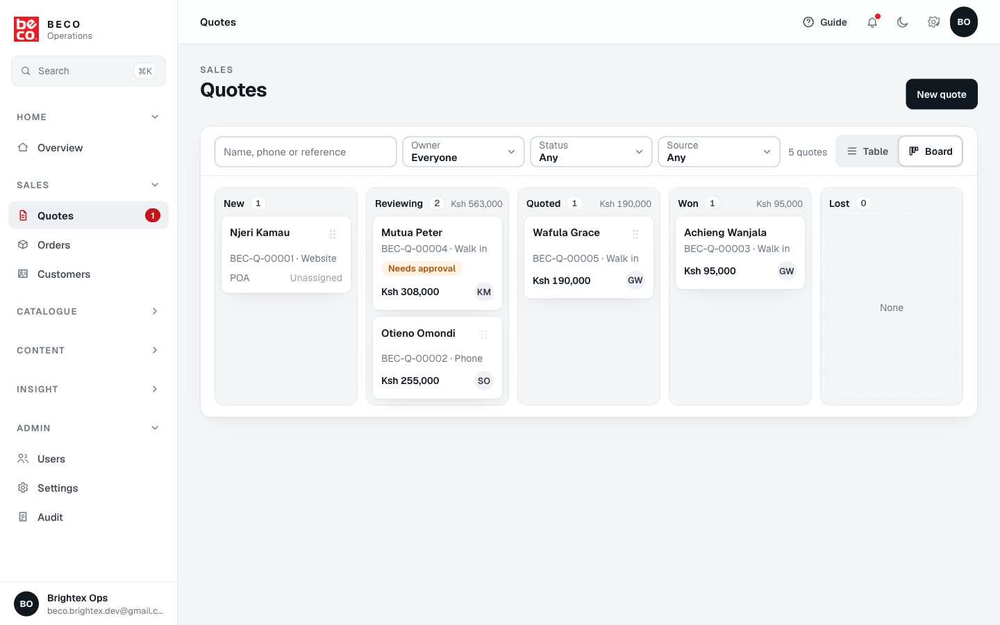 04 On a phone Quoting at the counter The dashboard is built to be used standing at the counter with one hand. The main screens sit in a bar at the bottom of the phone, with New quote in the middle. 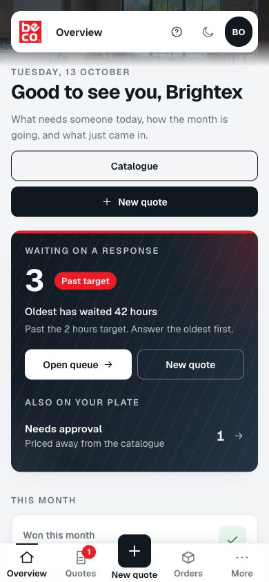 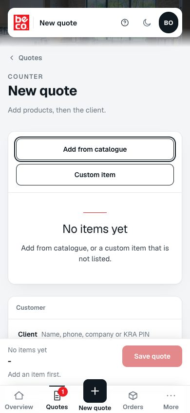 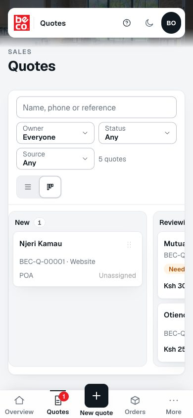 1 Pick the customer.Search by name or phone. A number already on file brings up the existing customer, so nobody is entered twice. 2 Add the products.Tick several from the catalogue at once. A product that comes in sizes lists one row per size, each with its own price. Anything not listed can be added as a custom item. 3 Price and send.Adjust quantities and prices, then send the branded PDF by email or WhatsApp, or print it. 05 Control without slowing sales From approval to payment
flowchart TB
P[Salesperson prices the quote] --> Q{Any price differentFigure 3. A salesperson can type any price, so a deal is never lost waiting. But a quote priced away from the catalogue cannot be sent, won or lost until a manager approves it, and changing a line afterwards needs approval again. 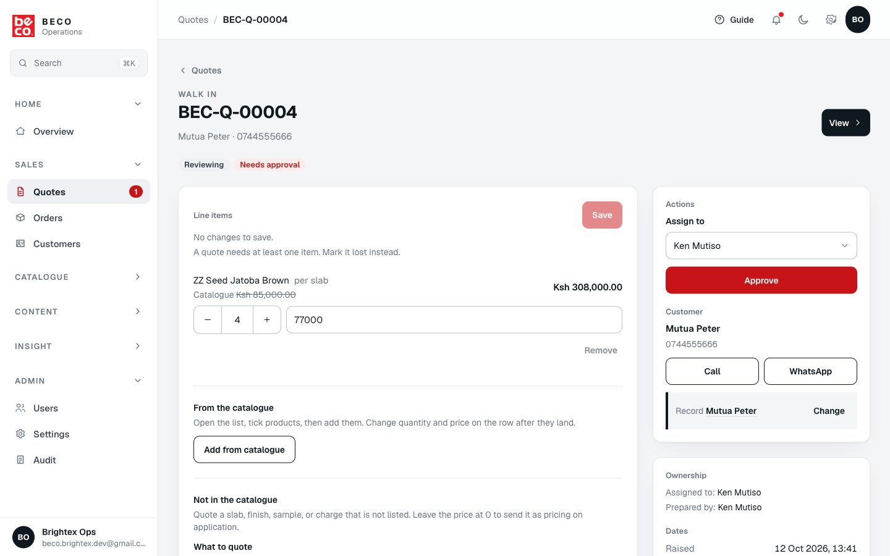 06 What you sell Your catalogue and photographs 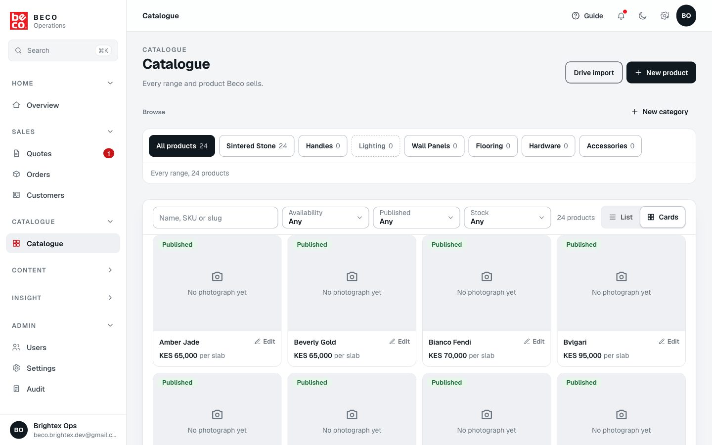 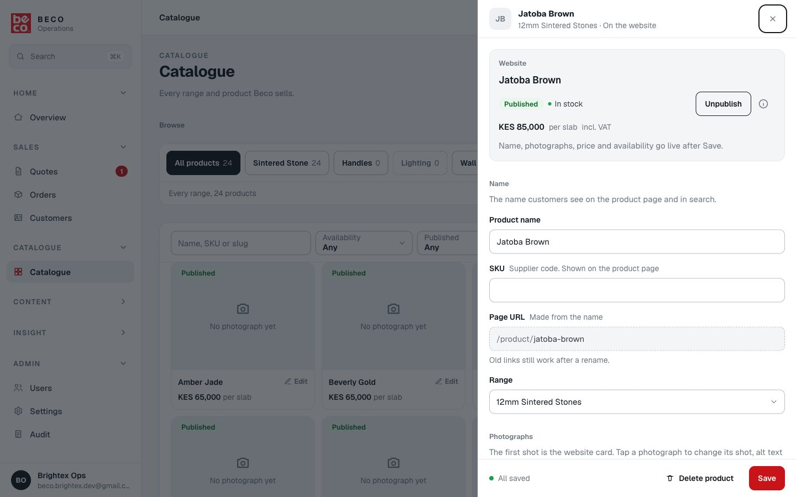 flowchart LR A[Pick several photos Figure 4. iPhone photographs included. A 12MB photo becomes about a megabyte before it leaves the phone, so it uploads in seconds even on mobile data. Each file shows Preparing, Uploading, Saving and Added. 07 Access Who can see what
Extra access, without a new roleA person can be let into a section beyond their role, for example a product manager who should see quotes. Granted sections open read only: they can look, not change, and the screen says View only. Brightex can grant any section; a Beco manager given staff management can grant what they hold themselves. 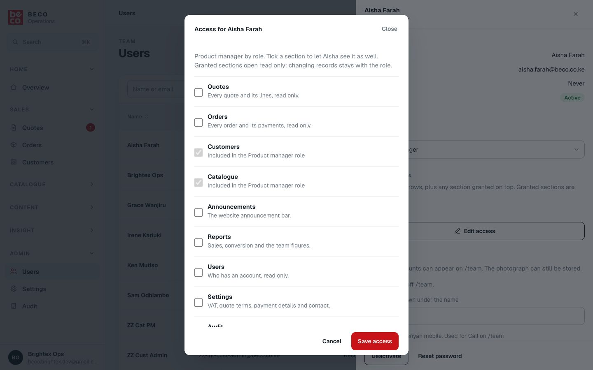 08 Help built in Finding your way 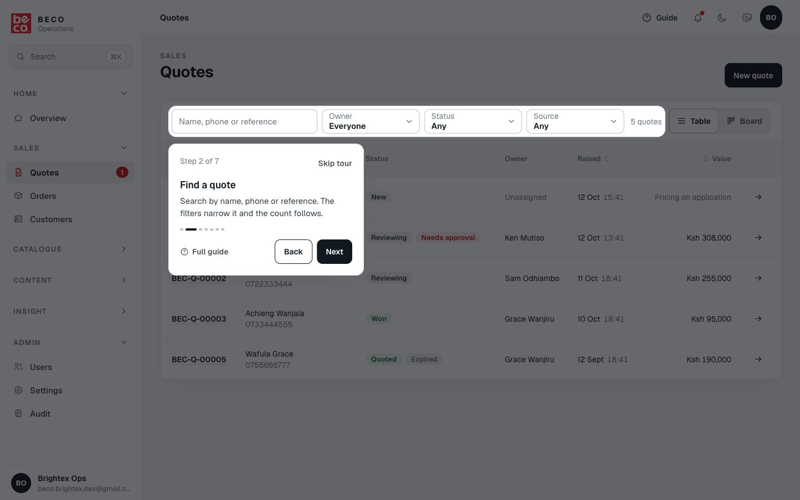
09 The reasoning Why it is built this way Quotes, not a shopping cart
Beco's customers buy several materials for a project and agree a price, so the website collects a request and your team prices it. Nobody pays online, so there is no card handling and nothing to go wrong at checkout. WhatsApp as the second door
Many of your customers prefer to talk on WhatsApp. Every page offers it after the quote request, and the PDF can be sent in a chat with the number filled in. Any price, with one person checking
A salesperson can agree a price on the spot so a deal is never lost waiting, but a special price must be approved by a manager before the quote is final. Every change recorded
Who changed what, and when, is kept for prices, quotes, orders, customers and settings. Records with commercial meaning are archived rather than erased, so the history always points to something real. A practice copy, separate from the real one
Changes are tried on a separate copy filled with made up customers before they reach you. Your real customers' names and numbers are never used for testing. Photographs on Cloudflare
Showing photographs costs nothing extra however many people visit, so a busy month never brings a surprise bill. Cost grows only with the size of the catalogue. Read only access instead of new roles
Letting one person see a section is a tick box, and it can never let them change records their role does not allow. Beco owns the accounts
Your domain, records, photographs, email and analytics are on Beco's own accounts. If Brightex stopped working with Beco tomorrow, everything would keep running. 10 Protection Keeping it safe Sign in Staff accounts onlyNobody can sign themselves up. Each person gets an account and must set their own password on first sign in. A deactivated account is locked out at once. Permissions Checked twiceEvery screen checks who you are, and the records themselves refuse anything your role does not allow. Hiding a button is never the only protection. Testing Over 3,300 automated checksEvery change is tested before it goes live, including that each kind of user is refused what they should not do. Backups Saved before every changeA full copy of the records is taken before each update to the database. An automatic nightly backup is planned and listed in section 12. 11 Ownership What Beco owns
flowchart TB
subgraph BECO[Beco's accounts]
direction LR
D1[beco.co.ke domain]
D2[Records database]
D3[Photograph storageFigure 5. Beco holds everything that holds its data. Brightex holds the code and the hosting projects while it works on the platform; a written handover plan moves both to Beco if the engagement ends, and the site keeps running in the meantime. 12 Next What is still open
What we need from Beco
|